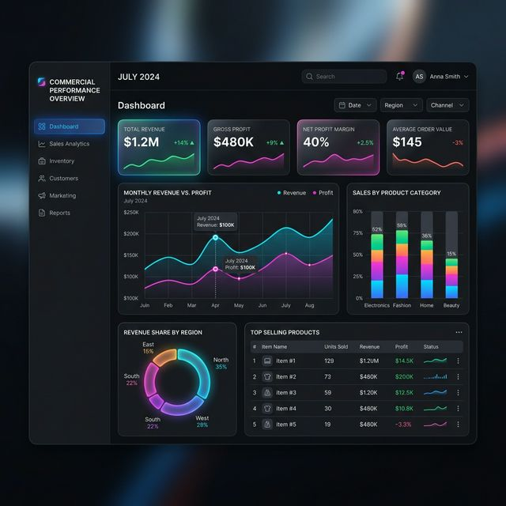

TechNova — Dashboard de Vendas e Desempenho Comercial

Visão Geral do Projeto
Uma análise profunda do desempenho de vendas, receita, lucro bruto e volume de devoluções, desenvolvido para uma empresa fictícia do setor varejista tecnológico chamada "TechNova". O painel expõe a saúde financeira da área de negócios e auxilia o gestor de vendas a focar nos produtos que trazem maior margem.
Resultados Encontrados (Key Findings)
- Receita Total (Revenue): R$ 7.06 Milhões através do período avaliado.
- Lucro Bruto (Profit): R$ 4.56 Milhões.
- Margem de Lucro: 64.53% geral.
- Volume de Vendas: 45.314 unidades faturadas.
- Taxa de Devolução (Return Rate): Equilibrada em 3.27%, fornecendo insight para investigação de lotes e parceiros.
Modelagem e DAX (Como foi feito)
Este relatório se destaca tecnicamente por construir cálculos e medidas inteligentes em Power BI e DAX avançado. A base de dados foi modelada utilizando as melhores práticas relacionais em Star Schema (Esquema Estrela), garantindo performance rápida mesmo cruzando milhares de transações.
Há uma alta flexibilidade para visualizar o resultado através de recortes visuais aplicando filtros interativos por Categorias de Produto, Marcas, Tipos de Lojas Parceiras e Continentes.
Dashboard Interativo
O painel de BI está disponível na nuvem para avaliação pública. Acesse e interaja clicando no botão: